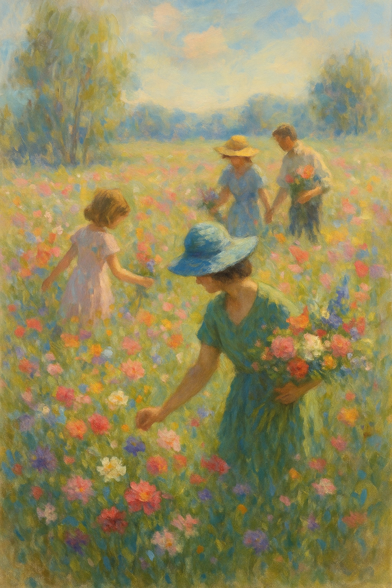

There’s nothing quite like wandering through a field of flowers and gathering your own bouquet. Our events are designed to be relaxed and family friendly. We provide clippers, containers and tips on harvesting – all you need to bring is your creativity and a love for blooms.
Stroll through the fields and fill a jar with approximately 20 stems for $25. Larger buckets (around 30 stems) are $35. Additional stems can be added for $1 each. Children 12 and under accompany free with a paying adult. We provide jars, buckets and snips – please wear sturdy shoes.
Gather your friends for a twilight picking session followed by refreshments under our cedar tree. Tickets are $50 per person and include up to 35 stems, foliage and a vase. Space is limited to maintain an intimate atmosphere.
Learn the art of arranging flowers from Joyce and the family. This hands‑on workshop covers harvesting, conditioning and tying a spiral bouquet. The $60 fee covers all materials and 30 stems of our finest flowers. You’ll leave with a gorgeous arrangement and the skills to create more at home.
To reserve tickets or inquire about private events, please email info@mastfamilyflowers.com or call (503)‑555‑1234.